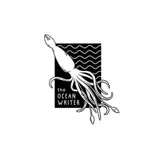
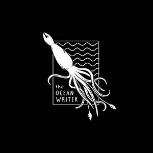

Trade Mark Journal No.2025/026 27 June 2025
UK00004220105 17 June 2025 (35,41)
Mark 1

Mark 2

- Class 35
- Newspaper advertising; Writing of business reports; Business reports (Writing of -); Radio and television advertising; Advertising in the popular and professional press; Writing of business project reports; Magazine advertising; Professional business consultancy; Consultancy (Professional business -); Business consultancy (Professional -); Professional business consulting; Advertisement and publicity services by television, radio, mail; Publication of advertising literature; Radio advertising; Copywriting; Advertising copywriting; Copywriting for advertising and promotional purposes; Advertising and marketing consultancy; Marketing; Advertising and marketing; Marketing consultancy; Marketing consulting; Advertising and marketing services; Business marketing consultancy; Consultancy services relating to advertising, publicity and marketing; Marketing advice; Advertising, promotional and marketing services; Advertising, marketing and promotional services; Marketing, advertising, and promotional services; Influencer marketing; Consultancy relating to marketing; Professional consultancy relating to marketing; Advertising, marketing and promotion services; Marketing, advertising and promotion services; Marketing services; Business marketing consulting services; Research services relating to advertising and marketing; Digital marketing; Direct marketing consulting; On-line advertising and marketing services; Promotional marketing; Business marketing services; Marketing (Business advice relating to -); Marketing research; Business advice relating to marketing; Advertising, marketing and promotional consultancy, advisory and assistance services; Consultancy relating to business advertising; Referral marketing; Marketing management advice; Internet marketing; Marketing research services; Promotion, advertising and marketing of on-line websites; Consulting services in the field of Internet marketing; Scriptwriting for advertising purposes; Consultancy services in the field of affiliate marketing; Online marketing; Consulting services relating to marketing; Business marketing consultation services; Marketing agency services; Advice in the field of business management and marketing; Marketing assistance; Advertising and marketing services provided by means of blogging; Creative marketing plan development services; Product marketing; Consultancy regarding advertising communications strategy; Marketing analysis; Affiliate marketing; Marketing studies; Marketing consultation services; Business advice relating to strategic marketing; Consultancy regarding advertising communication strategies; Consultancy relating to advertising; Business advice relating to advertising; Promotion [advertising] of business; Business advice relating to marketing management consultations; Dissemination of advertising, marketing and publicity materials; Direct marketing services; Marketing services in the field of web site traffic optimization; Advertising services for the promotion of e-commerce; Development of marketing concepts; Consulting services in the field of development of advertising concepts; Providing advice in the field of business management and marketing; Marketing in the framework of software publishing; Advice relating to marketing management; Providing marketing consulting in the field of social media; Press advertising consultancy; Promotional marketing services using audiovisual media; Advertising; Consultancy relating to advertising and promotion services; Distribution of advertising, marketing and promotional material; Planning of marketing strategies; Advertising of business web sites; Advertising text publication services; Advertising research services; Digital advertising services; Targeted marketing; Business consultancy services relating to the marketing of fund raising campaigns; Advertising research; Promotional and advertising services; Promotional advertising services; Planning services for marketing studies; Writing of publicity texts; Publicity texts (Writing of -); Texts (Writing of publicity -); Consultations relating to business advertising.
- Class 41
- Freelance journalism; News reporter services; Newspaper publishing; Newspaper publication; Multimedia publishing of newspapers; Publishing of newspapers; Publication of newspapers; News reporters services; Reporters services (News -); Multimedia publishing of magazines, journals and newspapers; Magazine publishing; News reporting; Journalism services; TV and radio presenter services; News programme services for radio or television; Multimedia publishing of magazines; Photographer services; Publication of consumer magazines; Publishing, reporting, and writing of texts; News syndication for the broadcasting industry; Television and radio entertainment; Radio and television entertainment; Multimedia publishing of journals; Multimedia publishing; News syndication reporting; Photographic reporting; Online publication of electronic newspapers; Multimedia publishing of electronic publications; Radio entertainment; Publication of documents in the field of training, science, public law and social affairs; Publishing of stories; Television, radio and film production; Publishing a newspaper for customers on the Internet; Publication of magazines; Magazines (Publication of -); Publishing of web magazines; Publishing of journals; News reporting services; Publishing; Television and radio entertainment services; Radio and television entertainment services; Entertainment in the nature of television news shows; Television entertainment; Editing of radio programmes; Multimedia publishing of books; Publishing of electronic publications; Book publishing; Publication of journals; Scriptwriting, other than for advertising purposes; Scriptwriting services; Script writing services; Training services relating to retail marketing; Writing services for blogs; Custom writing services for non-advertising purposes; Scriptwriting services for non-advertising purposes; Screenplay writing; Writing screenplays; Writing of texts; Creation [writing] of podcasts; Book and review publishing; Writing and publishing of texts, other than publicity texts; Publishing of books; Written text editing; Editing of written text; Creation [writing] of educational content for podcasts; Publishing of books, magazines; Editing of written texts; Publication of books; Books (Publication of -); Publication of audio books; Publication of text books; Publication of books, reviews; Publication of educational books; Publishing of books and reviews; Publishing of instructional books; Services for the publication of books; Publication of textbooks; Publication of books, magazines, almanacs and journals; Online publication of electronic books and journals; Publication of electronic books and journals online; Publication of texts; Publishing of electronic books and journals online; Production of podcasts; Provision of entertainment via podcast; Provision of entertainment via podcasts; Production of video and audio recordings; Presentation of radio programmes; Audio, film, video and television recording services; Production of radio broadcasts; Production and presentation of radio programmes; Production of audio recordings; Audio recording and production.
The Ocean Writer Ltd